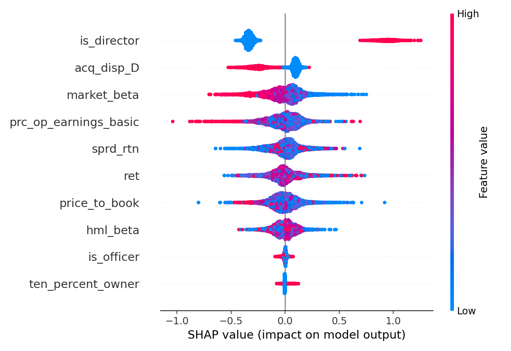

This report shows how well the model separates higher-risk insider trades from lower-risk ones, which inputs most influence those scores (SHAP), and a short causal-style summary from the causal forest. “UIT” means unlawful insider trading in this project.
The problem: Companies and regulators see huge volumes of insider trades (Form 4–style filings). Most activity is routine or legitimate; a small fraction may warrant investigation. Humans cannot review every trade with equal depth—so teams need a fair, repeatable way to prioritize which trades to look at first.
What this prototype does: It assigns each trade a risk score—how much it resembles patterns linked to unlawful insider trading in the training data—then shows which inputs mattered most for that score. That combination supports triage: focus on high scores, and use the explanations to start a structured review (not to replace legal judgment).
Why “explain” matters for the business: A score alone is hard to defend in audit or management review. Showing drivers (e.g. role, valuation, market conditions) helps answer “Why did this trade rank high?” and supports documentation. The report below includes global drivers (SHAP) and a short causal-style summary from a causal forest— useful for exploration, not as proof of wrongdoing.
Scope: This page is generated from mock / synthetic data for demonstration. In production you would calibrate thresholds, validate on real labeled cases, and align workflow with legal and compliance policy.
This run uses synthetic mock data generated to mirror the shape of the research setup (insider filings + market panel + fundamentals + labels). It is not a download of live SEC, CRSP, or Compustat feeds.
uv run uit mock)mock_data/form4_trades.parquet — Insider-like transactions (roles, acquisition/disposition, merged features) and a synthetic label_uit for training/evaluation.mock_data/crsp_daily.parquet — Daily market-style panel: returns, prices, volume, and spread proxies (analogous to CRSP-style inputs in the paper).mock_data/compustat_quarterly.parquet — Quarterly fundamentals (e.g. valuation and ratio-style fields), analogous to Compustat/Capital IQ in the paper.mock_data/link.parquet — Crosswalk: cik, gvkey, permno, ticker — used to join trades to fundamentals and market data.mock_data/enforcement_labels.parquet — Mock subset of “enforcement-style” positive labels (illustrative only).mock_data/new_trades.parquet — Unlabeled trades for inference / scoring demos (no label_uit).Features fed to the model in this repo are a small subset of the paper’s full feature set; see the project README for the exact column names used in training and scoring.
1) The top drivers of insider-trading risk scores indicate that certain factors significantly influence the likelihood of risky trades. Notably, being a director tends to increase risk, while other factors like market behavior and financial metrics can have varying effects. Understanding these drivers helps in assessing potential insider trading risks more effectively. 2) **Top Drivers:** - **is_director:** Indicates if the individual is a director; typically increases risk. - **acq_disp_D:** Reflects acquisition or disposal activity; generally lowers risk. - **market_beta:** Measures market volatility; usually lowers risk. - **prc_op_earnings_basic:** Relates to basic earnings; tends to lower risk. - **sprd_rtn:** Indicates spread returns; has a minor lowering effect on risk. - **ret:** Represents returns; generally lowers risk. - **price_to_book:** Compares market price to book value; tends to lower risk. - **hml_beta:** Measures value versus growth; has a slight lowering effect on risk. Caution: The risk score does not equal proof of insider trading and requires human review for accurate interpretation.
| feature | mean_abs_shap | mean_shap |
|---|---|---|
| is_director | 0.448687 | -0.092567 |
| acq_disp_D | 0.147658 | -0.011588 |
| market_beta | 0.125289 | -0.012692 |
| prc_op_earnings_basic | 0.106493 | -0.012365 |
| sprd_rtn | 0.097285 | -0.004974 |
| ret | 0.096709 | -0.009024 |
| price_to_book | 0.094229 | -0.009545 |
| hml_beta | 0.072862 | -0.004933 |
| is_officer | 0.010032 | -0.000396 |
| ten_percent_owner | 0.005203 | -0.000097 |
shap_beeswarm.png
| treatment | mean_marginal_effect |
|---|---|
| is_director | 0.178992 |
| price_to_book | -0.003551 |
| market_beta | -0.052271 |
| ret | -0.032269 |
uit_risk rows with their top driver features.| trade_id | cik | personid | transaction_date | uit_risk | top_drivers |
|---|---|---|---|---|---|
| 24547 | 0001000066 | 765 | 2022-07-13 | 0.718647 | is_director,prc_op_earnings_basic,market_beta,sprd_rtn,price_to_book |
| 4704 | 0001000225 | 966 | 2020-10-08 | 0.697564 | is_director,prc_op_earnings_basic,market_beta,hml_beta,sprd_rtn |
| 5019 | 0001000142 | 845 | 2023-04-20 | 0.623076 | is_director,ret,prc_op_earnings_basic,acq_disp_D,price_to_book |
| 16645 | 0001000186 | 392 | 2022-06-15 | 0.582285 | is_director,ret,price_to_book,acq_disp_D,prc_op_earnings_basic |
| 7057 | 0001000242 | 853 | 2022-08-12 | 0.540432 | is_director,sprd_rtn,price_to_book,hml_beta,ret |
| 4806 | 0001000214 | 126 | 2023-05-17 | 0.538223 | is_director,price_to_book,ret,sprd_rtn,prc_op_earnings_basic |
| 14304 | 0001000187 | 491 | 2021-11-12 | 0.531435 | is_director,prc_op_earnings_basic,ret,price_to_book,sprd_rtn |
| 11047 | 0001000157 | 255 | 2023-03-16 | 0.529560 | is_director,price_to_book,ret,prc_op_earnings_basic,market_beta |
| 11896 | 0001000242 | 1039 | 2022-09-23 | 0.525252 | is_director,prc_op_earnings_basic,hml_beta,ret,price_to_book |
| 2555 | 0001000208 | 457 | 2022-11-09 | 0.521511 | is_director,price_to_book,prc_op_earnings_basic,market_beta,acq_disp_D |
| 13502 | 0001000187 | 491 | 2021-01-20 | 0.518364 | is_director,sprd_rtn,acq_disp_D,market_beta,ret |
| 599 | 0001000173 | 456 | 2020-04-21 | 0.508730 | is_director,prc_op_earnings_basic,sprd_rtn,market_beta,price_to_book |
| 4108 | 0001000096 | 143 | 2022-11-04 | 0.500775 | is_director,market_beta,sprd_rtn,hml_beta,price_to_book |
| 16692 | 0001000242 | 853 | 2022-09-06 | 0.496900 | is_director,ret,sprd_rtn,hml_beta,price_to_book |
| 69 | 0001000170 | 227 | 2022-06-20 | 0.490550 | is_director,sprd_rtn,prc_op_earnings_basic,ret,price_to_book |
| 20927 | 0001000182 | 1093 | 2022-12-09 | 0.487270 | is_director,ret,price_to_book,acq_disp_D,sprd_rtn |
| 13375 | 0001000142 | 341 | 2023-04-18 | 0.485346 | is_director,ret,price_to_book,prc_op_earnings_basic,hml_beta |
| 28850 | 0001000169 | 13 | 2023-05-01 | 0.484545 | is_director,market_beta,price_to_book,ret,hml_beta |
| 4627 | 0001000048 | 780 | 2022-04-28 | 0.478846 | is_director,ret,sprd_rtn,price_to_book,acq_disp_D |
| 27670 | 0001000064 | 172 | 2021-12-29 | 0.476464 | is_director,ret,price_to_book,sprd_rtn,acq_disp_D |
| 3914 | 0001000193 | 247 | 2021-01-29 | 0.474341 | is_director,ret,acq_disp_D,prc_op_earnings_basic,sprd_rtn |
| 13783 | 0001000043 | 81 | 2022-04-25 | 0.472726 | is_director,ret,acq_disp_D,prc_op_earnings_basic,market_beta |
| 6905 | 0001000085 | 1101 | 2023-07-12 | 0.470394 | is_director,ret,sprd_rtn,hml_beta,prc_op_earnings_basic |
| 15647 | 0001000072 | 33 | 2022-09-06 | 0.466520 | is_director,prc_op_earnings_basic,price_to_book,hml_beta,ret |
| 4739 | 0001000242 | 1039 | 2022-07-18 | 0.465253 | is_director,hml_beta,ret,price_to_book,sprd_rtn |